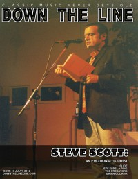

Down The Line
Jul 2012, #13
| Cover |
|---|
|  |
 Online Exclusively Online Exclusively |
| Writers in this Issue |
| Matt Crosslin Mike Indest Josh Lory Steve Ruff |
Steve Scott
Cover Feature:- "An Emotional Tourist" by Steve Ruff
- "SLIDE:"
- "PING: Jeff Elbel and a cast of uncompromising musicians complete their finest work" by Steve Ruff
- "Coming Roundabout After a 20 Year Break" by Matt Crosslin
- "An interview with the Author of Noah Primeval" by Mike Indest, Matt Crosslin
- Bill Mallonee - Hardscrabble Dreams by Steve Ruff
- Scott Silletta - The Life and Times Of... by Josh Lory
- SLIDE - Auto Tune Massacre by Matt Crosslin
- Steve Scott - Emotional Tourist by Matt Crosslin
- The 77s - Sticks and Stones (reissue) by Steve Ruff
- Doug Burr - Trembling Lips and Pale Fingertips by Matt Crosslin
- Crumbächer - Escape from The Fallen Planet (25th Anniversary Edition) by Matt Crosslin
- Destroy Nate Allen - With Our Powers Combined by Matt Crosslin
- Marco Machera - One Time, Somewhere by Matt Crosslin
- either/orwell - either/orwell by Matt Crosslin
- Mind of the Sick - Anti -Devil Superstar by Matt Crosslin
- Almost Ugly - The Basement Tapes EP by Matt Crosslin
- Braden Mann and the Reprimand - The Chemicals Won't Balance by Matt Crosslin
- Jump Ship Quick! - Where Thieves Cannot Tread by Josh Lory
- And How - Almost Tomorrow by Matt Crosslin
- The Old-Timers - Soli Deo Gloria by Matt Crosslin
- Ultra Monark - Exorcising Spirits by Matt Crosslin
- Gold Beach - Gold Beach by Matt Crosslin
- The Beckoning - War by Matt Crosslin
- True Liberty - Marked for Life by Steve Ruff
- Unteachers, Grace and Thieves - split by Matt Crosslin
- The Choir - The Loudest Sound Ever Heard by Steve Ruff
- Government Hate Mail - Government Hate Mail EP by Matt Crosslin
- Mist Giant - Glass Walls by Matt Crosslin
Relevant Links
Official web site of Down The LineIssue Repository @ the Internet Archive
This issue is available exclusively online.
© 2011 CMnexus. Last updated August 2025. Contact: editor -AT- cmnexus -DØT- org